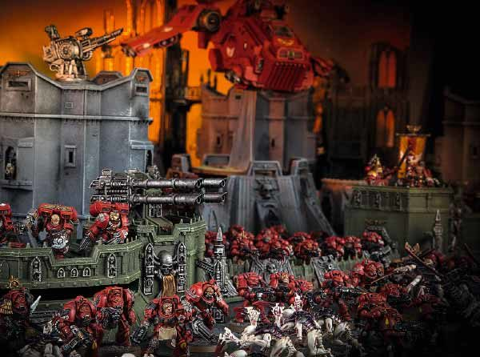

战锤40K 从这里开始
start here
在遥远未来的恐怖黑暗中，惟有战争。
In the grim darkness of the far future,there is only war.
start here
In the grim darkness of the far future,there is only war.
start here
In the grim darkness of the far future,there is only war.


在绘制模型之前，首先需要组装它们。 使用到的是Citadel精剪刀，并按照每个套件提供的装配说明，收集器将其模型的组件从塑料框架中剪出，并使用塑料胶地组装到一起。 建造微缩模型军队是一种令人愉悦的体验，许多收藏家都非常喜欢 – 在这里你可以进行各种部件交换以及重新构建，还有很大的空间可以将微缩模型转换为军队的独特补充。
为此，Games Workshop生产了一系列专业工具和大量的Citadel颜彩- 配有Citadel涂装系统，可让您轻松愉快地组装和绘制构成您个人收藏的微缩模型。 许多人从中获得了很多乐趣，陶醉在创作过程中，并为自己可能制作的最佳微缩模型而感到自豪。
开放式竞赛 开放游戏是开始玩游戏的最简单方式，因为您只需要将一些模型放在一起并开始掷骰子。 没有必要提前计划你的军队 – 相反，你和你的对手只需选择你想要玩的模型，设置它们并开始游戏。 这是尝试不同寻常的军队组合的好方法，也适合初学者，他们可能还没有组建过庞大而多样化的军队。 您可以通过添加来自战锤40,000的各种规则或指南来补充这种自由形式的乐趣，甚至可以创建您自己的场景和独特的挑战。
叙事式竞赛 战锤40,000宇宙充满了强大的英雄，可恶的恶棍以及了不起的勇气和卑鄙的野蛮力的各种故事。 叙事游戏就是将你正在桌面上玩的游戏与这个总体叙事联系起来，帮助你制作属于你自己的传奇。 在你开始一个叙事游戏之前，玩家们应该先聚在一起思考他们想要讲述的故事，以及他们军队的动机和目标。 每个玩家都应该选择适合被告知的故事的力量，并且制定好一些基本规则和特定地形片段有助于将你的故事变为现实。 叙事游戏是一种令人难以置信的有趣和吸引人的方式，让自己沉浸在这个独特的充满乐趣的和惊险的环境中。
